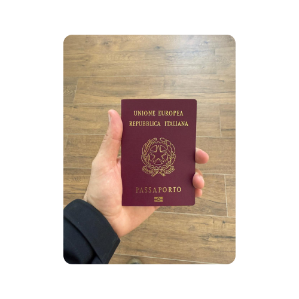
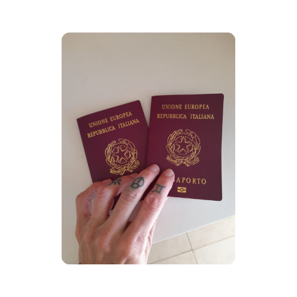
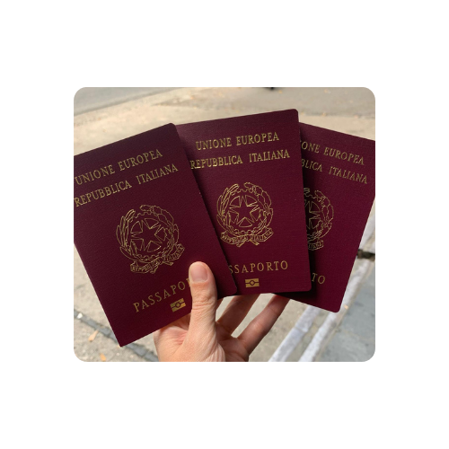

Información para Italianos
Derechos y obligaciones viviendo en el exteriorEn esta página encontrarás información desarrollada sobre cada uno de estos temas fundamentales:

Registro A.I.R.E.
Anagrafe degli Italiani Residenti all'EsteroEs el registro obligatorio para todos los ciudadanos que viven fuera de Italia más de 12 meses. Es necesario para realizar cualquier trámite consular.
- Permite al Estado saber dónde vives.
- Es necesario para renovar pasaporte y votar.
- Se actualiza a través del portal Fast It.
Pasaporte
Tu documento de viaje internacionalEs el documento de viaje y de identidad. Tiene validez de 10 años para mayores de 18, y de 3 a 5 años para menores.
- Viajar: Ingreso a países sin visa (ej. USA con ESTA).
- Residir: Derecho a vivir y trabajar en la Unión Europea.
- Solicitud: Se tramita en el Consulado que te corresponde por domicilio (vía Prenotami).



Carta de Identidad Electrónica
Identidad digital y físicaConocida como CIE, sirve para identificarse dentro de la Unión Europea y realizar trámites online (SPID).
- Documento tamaño tarjeta de crédito con chip.
- Válida para viajar dentro de la UE.
- En el exterior se solicita en el Consulado.
- En Italia se gestiona en la Comune.